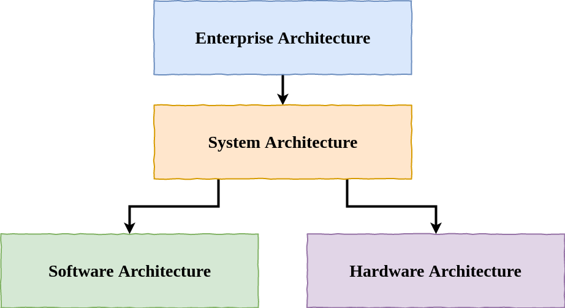

Software Architecture
Andreas Falk
10.11.2017
Presentation and Workshop:
https://github.com/nt-ca-aqe/ws-2017-11-10-architecture
Andreas Falk
andreas.falk@novatec-gmbh.deAgenda
What is Software Architecture
Software Craftsmanship
Testautomation
Lunch Break
Test-Driven Development (TDD)
Spring Testing (Optional)
Security Testing (Optional)
Q&A
Requirements for Workshop
- Java 8
- Maven
- IntelliJ or Eclipse IDE (STS)
Vorstellungsrunde
- Was ist für Sie
Software Testing
? - Warum sind Sie heute hier?
- Haben Sie (projekt-)spezifische Problemstellungen
- Was möchten Sie durch den Workshop erreichen?
Architecture?

What is Software Architecture?
EU General Data Protection Regulation (GDPR)
“...should adopt internal policies and implement measures which meet in particular the principles of data protection by design and data protection by default”http://eur-lex.europa.eu/legal-content/EN/TXT/HTML/?uri=CELEX:32016R0679 (78)
Architecture Layers
Software Craftsmenship

"We need to be professionals"
"We will not ship shit"
Bob Martin
Demanding Professionalism in Software Development"Not Just Code Monkeys"
Martin Fowler
OOP 2014 KeynoteAgile Manifesto
Individuals and interactions over processes and tools
Working software over comprehensive documentation
Customer collaboration over contract negotiation
Responding to change over following a plan
Craftsmanship over Execution *)
*) https://www.infoq.com/news/2008/08/manifesto-fifth-craftsmanship
SOLID
- Single Responsibility Principle
- Open/Closed Principle
- Liskov's Substitution Principle
- Interface Segregation Principle
- Dependency Inversion Principle
Single Responsibility Principle
A class should have only one reason to change
Open-Closed Principle
You should be able to extend a classes behavior, without modifying it
Liskov Substitution Principle
Derived classes must be substitutable for their base classes
Interface Segregation Principle
Make fine grained interfaces that are client specific
Dependency Inversion Principle
Depend on abstractions, not on concretions
Enforcing Clean Code
- Pair Programming
- Code Review
- Static Code Analysis (e.g. PMD, FindBugs)
- Coding Dojos
Typical Sensitive Data
Passwords
Service credentials (DB, Messaging, ...)
OAuth2 client secrets
Encryption keys
Credit card numbers
Personal data

Application-xxx.Yaml
Database access credentials
spring:
datasource:
url: jdbc:postgresql://localhost/test
username: root
password: mysupersecretpassword
Key Management

Security Evolution

Introduction
 https://www.vaultproject.io
https://www.vaultproject.io

“A Security Swiss Army Knife”
Jeff Mitchell, Vault Lead, HashiCorp
A Tool for Managing Secrets like...
- Tokens
- Passwords
- MFA
- X.509 Certificates
- API keys
- DB credentials
Key Features
Secure Secret Storage
Dynamic Secrets
Data Encryption (AES cypher)
Leasing, Renewal & Revocation
Operational Features
Authentication
Authorization (ACL)
Audit Logs
High Availability Mode (HA)
Architecture

Storage

Secrets

Authentication

Key Shares

Spring Vault


Encryption as a service
Spring Cloud Vault


Secret vault mapping
bootstrap.properties
spring.cloud.vault.generic.application-name =
application1,additional/keys
#spring.cloud.vault.application-name = ...
#spring.application.name = ...
Mapped secret paths in vault
/secret/application1
/secret/application1/myprofile
/secret/additional/keys
/secret/application
/secret/application/myprofile
Rotate Database Credentials
bootstrap.yml
spring.cloud.vault:
postgresql:
enabled: true
role: readonly
backend: postgresql
username-property: spring.datasource.username
password-property: spring.datasource.username

Spring Cloud Config Vault Environment Repository
application.properties (Config Server)
spring.profiles.active=git,vault
spring.cloud.config.server.vault.host=127.0.0.1
spring.cloud.config.server.vault.port=8200
spring.cloud.config.server.vault.scheme=https
bootstrap.properties (Client)
spring.cloud.config.token = YourVaultToken
 https://github.com/hashicorp/vault-service-broker
https://github.com/pivotal-cf/spring-cloud-vault-connector
https://github.com/hashicorp/vault-service-broker
https://github.com/pivotal-cf/spring-cloud-vault-connector
Q&A
http://www.novatec-gmbh.de http://blog.novatec-gmbh.de
andreas.falk@novatec-gmbh.de
@NT_AQE, @andifalk
References
- Spring Cloud Config (https://cloud.spring.io/spring-cloud-config/)
- Shamir's secret sharing (https://en.wikipedia.org/wiki/Shamir's_Secret_Sharing)
- Spring Cloud Vault (https://cloud.spring.io/spring-cloud-vault)
- Vault (https://www.vaultproject.io)
- Cloud Foundry Vault Service Broker (https://github.com/hashicorp/vault-service-broker)
- Sources and Presentation (https://github.com/andifalk/cfsummit2017)
All images used are from Pixabay and are published under Creative Commons CC0 license.
All used logos are trademarks of corresponding companies